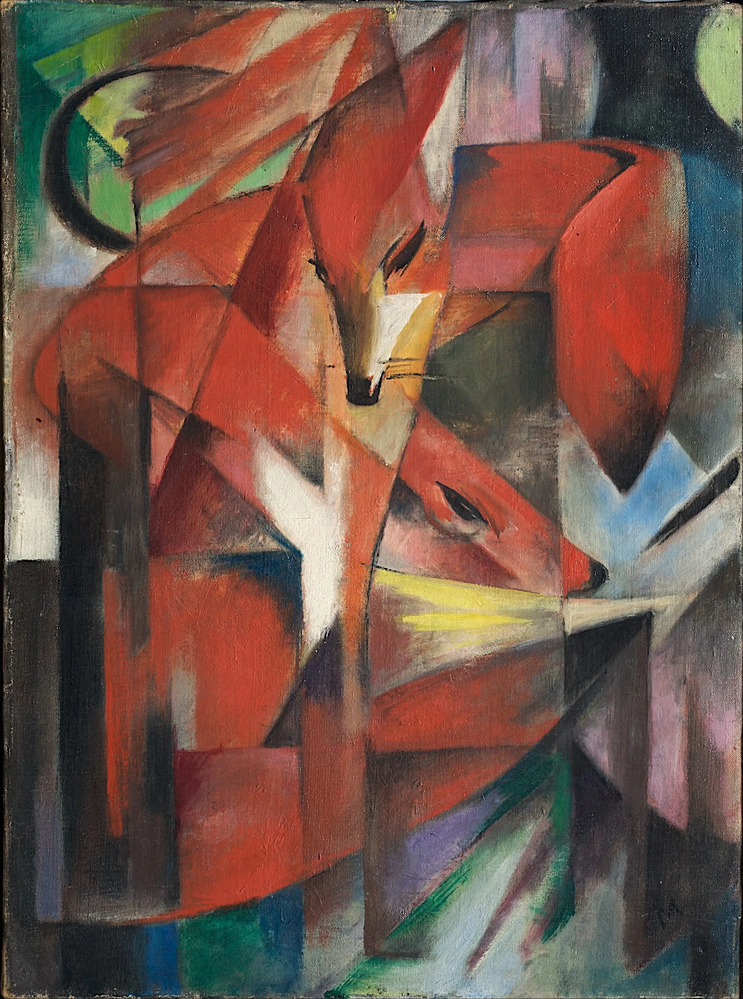
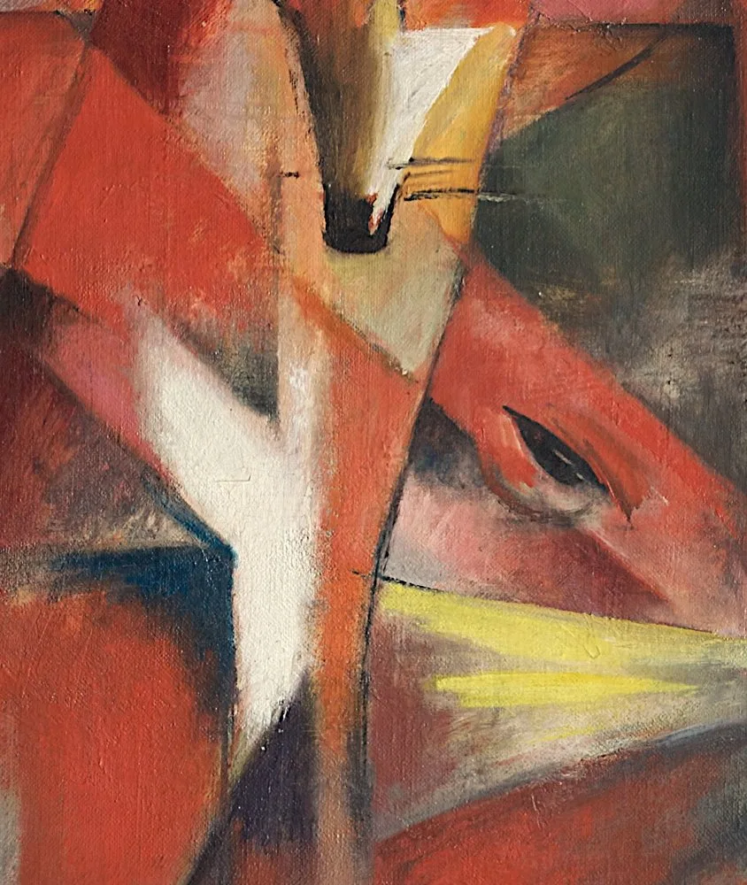
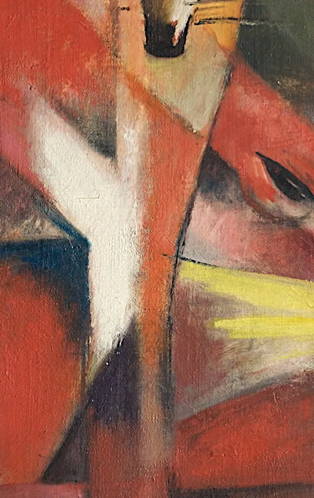
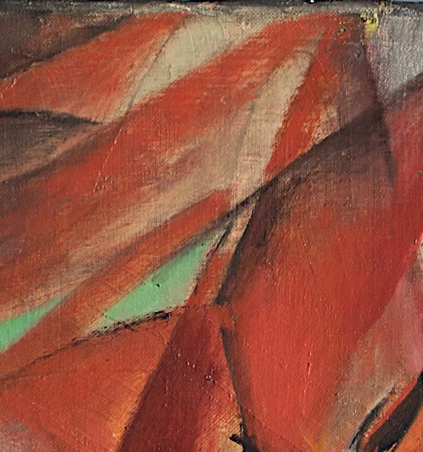
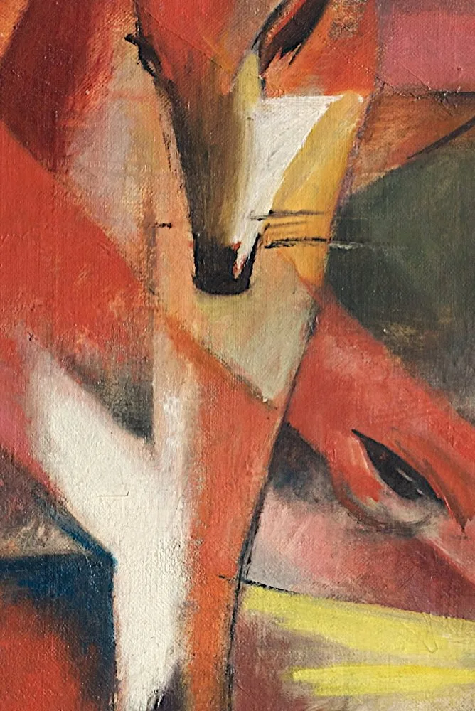
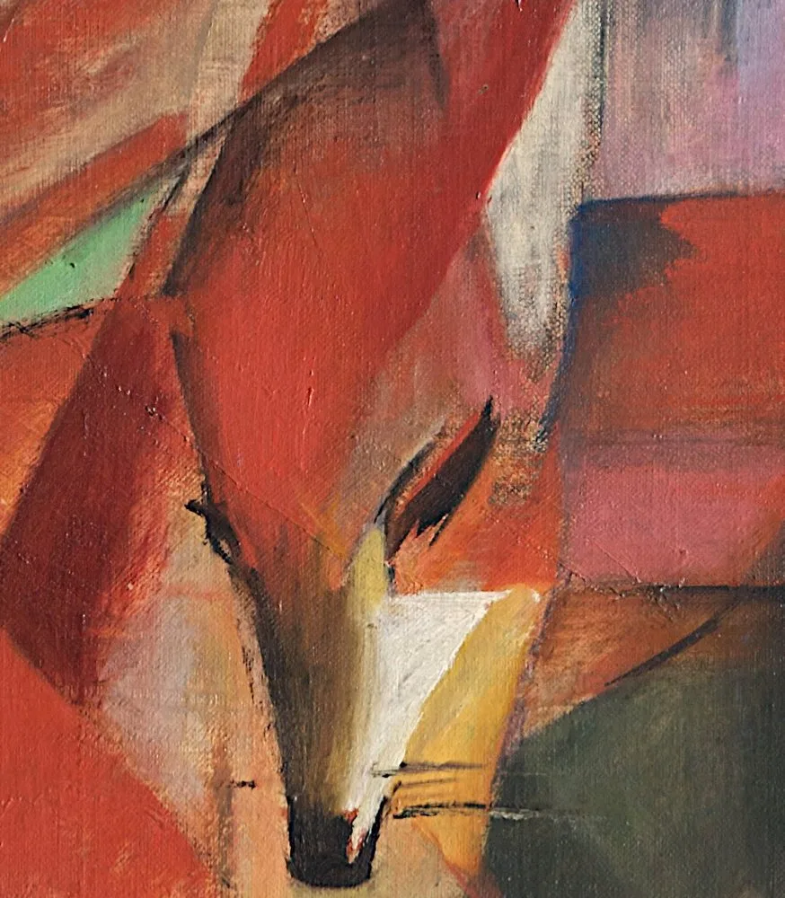
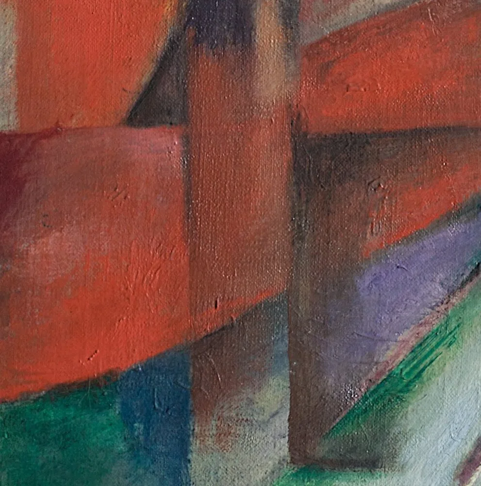
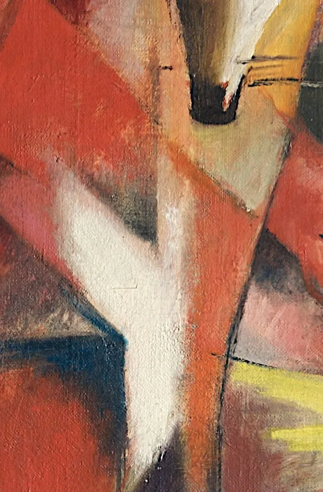
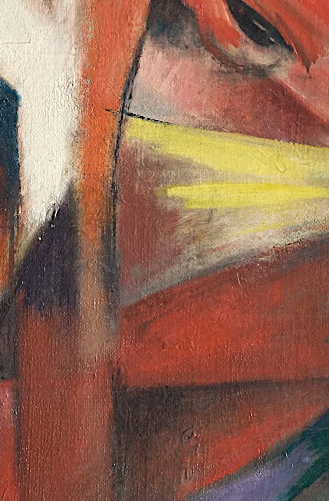
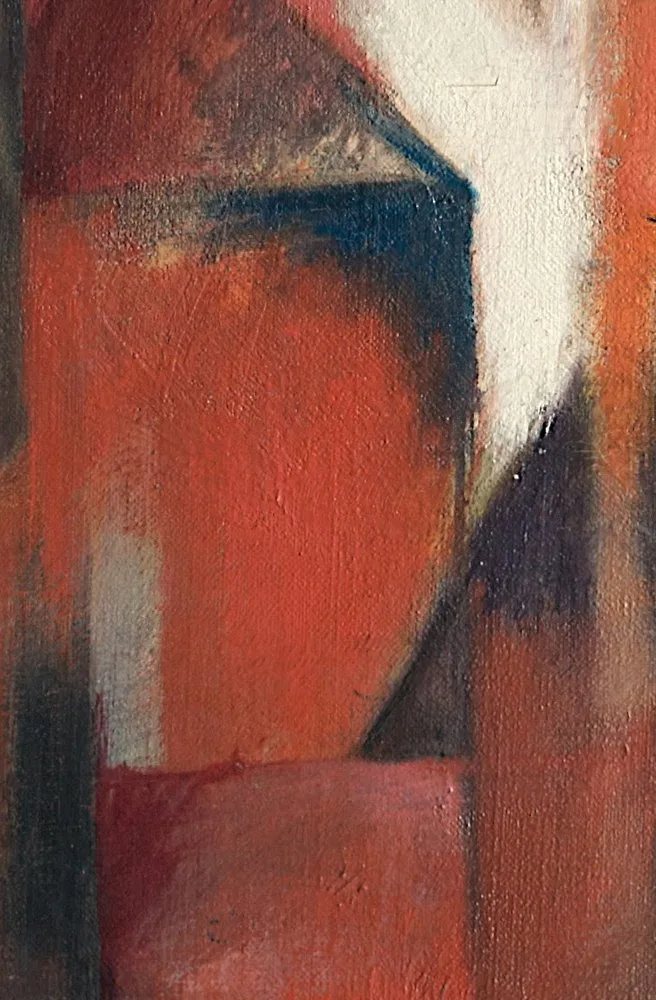

1913 年，弗朗茨·马克画了《狐狸》。这位青骑士社的创始人相信，动物比人更接近世界的本真——它们不伪装、不计算，只是纯粹地活着。于是他把狐狸拆成棱面，把原野染成晶体。
马克与康定斯基共同创立「青骑士」社，主张用颜色与形状直接表达精神，而非描摹眼睛所见。
他发展出一套私人色彩象征：蓝是精神与男性，黄是欢愉与女性，红是沉重的物质，绿是平静——颜色在他笔下，几乎是一套宗教。
所以这一页不替你找「像不像狐狸」，只带你走近那片棱面：点开画面上的 ✦ 光点，去看红、看蓝、看三只狐狸如何在一片原野里彼此应和。
—— 据马克书信与青骑士社研究的通行叙述
在左下角，可以点亮一段为这片原野特别挑选的钢琴前奏。
从一只狐狸到一片蓝：每一个色块，都是马克在画布上安放的一个「声部」。

点击画面中的 ✦ 光点 查看画面细节 · 图片来源：Wikimedia Commons（公有领域）
从慕尼黑到青骑士，从写实到棱面——马克用几年时间，把动物画成了通往精神的路。
1911 · 慕尼黑 · 起点
1911 年，马克与康定斯基在慕尼黑创办「青骑士」社，出版同名年鉴。他们反对学院写实，主张以色彩与形式直抵内心——动物，成了马克最钟情的题材。
➤1912–1913 · 转折
巴黎画家德劳内的奥菲主义（彩色棱面、纯粹光色）让马克深受震动。他开始把自然切成晶体般的块面，《狐狸》正是这一转向最成熟的成果。
➤1916 · 凡尔登
1916 年，马克作为骑兵军官战死于凡尔登战役，年仅 36 岁。他留下的动物画，成为表现主义最温柔也最痛切的一页。

马克相信颜色各有「性格」：蓝是精神、男性、遥远；黄是欢愉、女性、柔和；红是物质、沉重、甚至 brutal；绿是平静与满足。
在《狐狸》里，他让橙红的狐狸（生命力）与蓝色的天空（精神）彼此对照，再用绿黄的大地收束——一组颜色，被排成了一首无声的圣歌。
他说，动物的眼睛「比人的眼睛更纯净」，能照见世界的本原。画动物，于他而言不是题材选择，而近乎一种信仰。
※ 马克的色彩象征多见于其书信与笔记（如 1910–1912 年间致友人的信）；具体配对学界略有出入，本页取其通行表述。
马克把颜色当作词汇。以下是最常出现的几位「主角」。

最饱和的红橙，是画面跳动的心脏。

冷静的蓝，马克眼里最「男性」、最遥远的色。

一暖一冷彼此咬合，撑起整幅的平衡。

自然被切成彩窗般的块面。

饱满的绿黄，收束着脚下的原野。

几道折线拼出的警觉与专注。

简化的斜线里，藏着奔跑的暗示。

群体中的个体，各有各的姿态。
1911 年由马克与康定斯基在慕尼黑创立，成员还包括克利、明特尔等。他们出版年鉴、办展览，主张艺术应表达精神的内在真实，而非外在形似。
法国画家德劳内以纯粹的棱面光色（奥菲主义）闻名。马克 1912 年前后受其启发，从较写实的动物画转向几何化的「晶体」风格，《狐狸》是代表作。
在德国表现主义里，动物常被视为未被文明腐蚀的纯真象征。马克、诺尔德等都反复画动物，把对现代人的失望，转写成对野兽的礼赞。
第一次世界大战夺走了许多青骑士社成员。马克 1916 年殁于凡尔登，留下大量未完成的色彩理想——这幅《狐狸》因而更显珍贵。
马克创作《狐狸》(Die Füchse)，布面油画 88 × 66 cm，是其晶体化动物风格的代表作。
马克战死于凡尔登战役，年仅 36 岁；青骑士社随之星散，但他以颜色写下的「动物神学」影响深远。
画作经纳粹劫掠审查后，由杜塞尔多夫 Kunstpalast 博物馆归还犹太人收藏家库尔特·格拉维的后人，并于 3 月在佳士得以 4260 万英镑拍出。
《狐狸》成为马克市场与艺术史双重意义上的标杆，频繁出现于表现主义展览与教材之中。